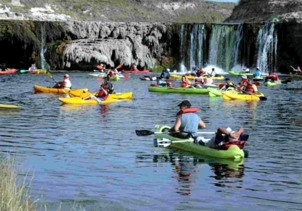
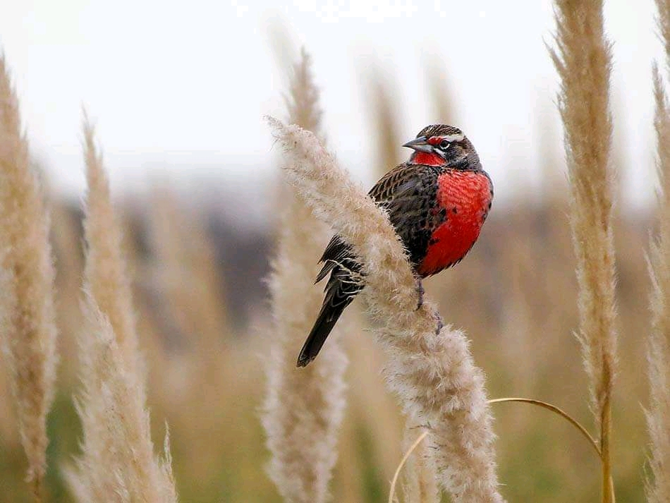
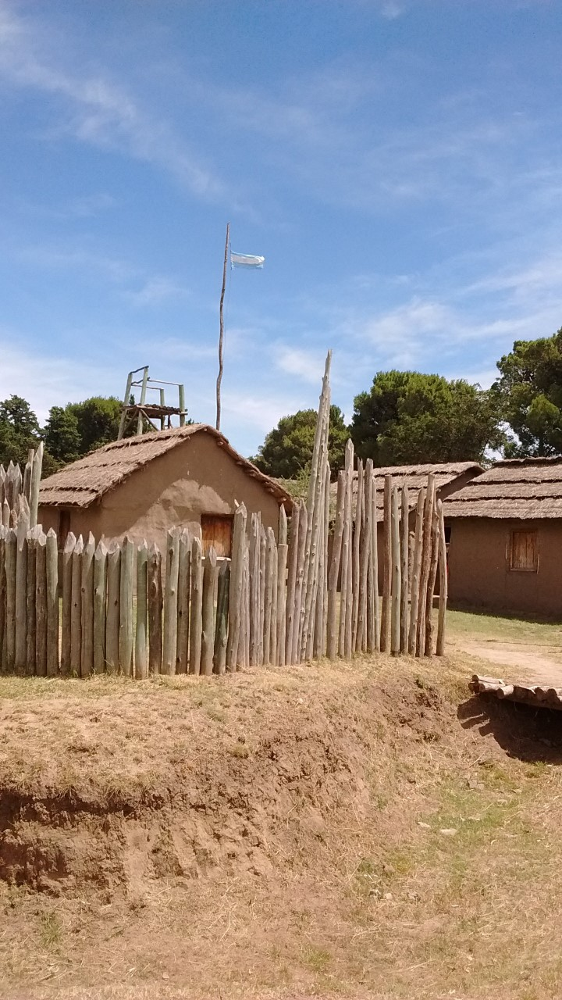

TURISMO AVENTURA
Disfrutar al aire libre y en familia de actividades que combinan la diversion con los paisajes: Tirolesa - Kayak (en el Rio Quequen).Visite nuestros canal YOUTUBE e INSTAGRAM
GASTRONOMIA

La gastronomia mas tradicional y la elaboracion casera de comidad y productos mas variados. Desde la elaboracion de QUESOS, VINOS y la mas exquisita comida GOURMET
FAUNA Y FLORA
A lo largo de la Ruta 72 y todos los accesos se puede observar la mas variada Fauna y Flora tipica de la Provincia de Buenos Aires
HISTORIA
ARTE e HISTORIA se mezclan con la tradicion para los amantes de nuestra historia.